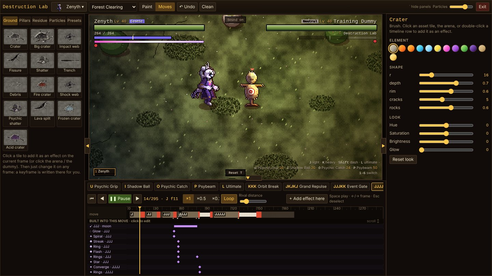
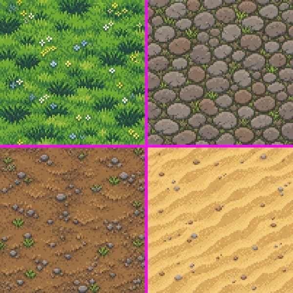
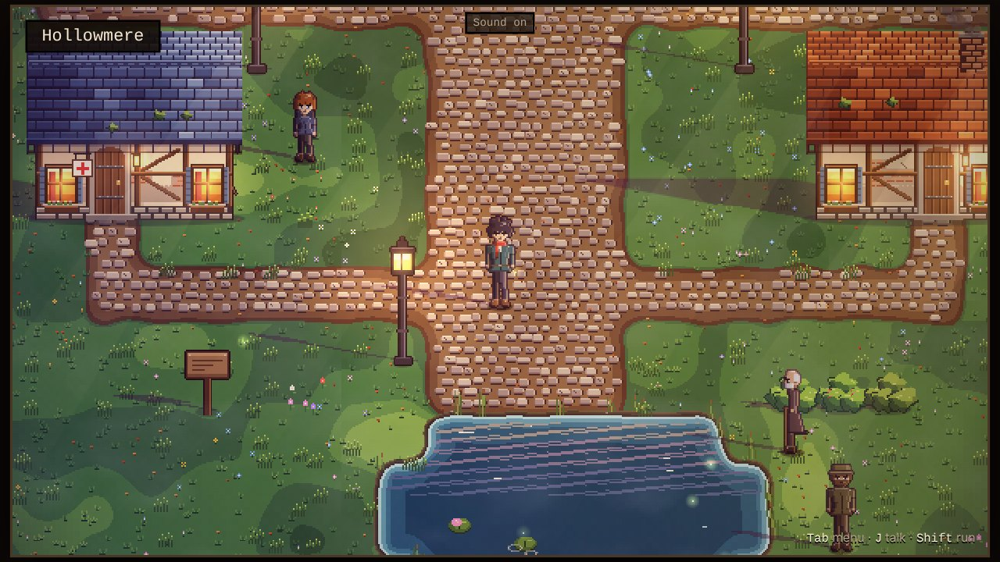
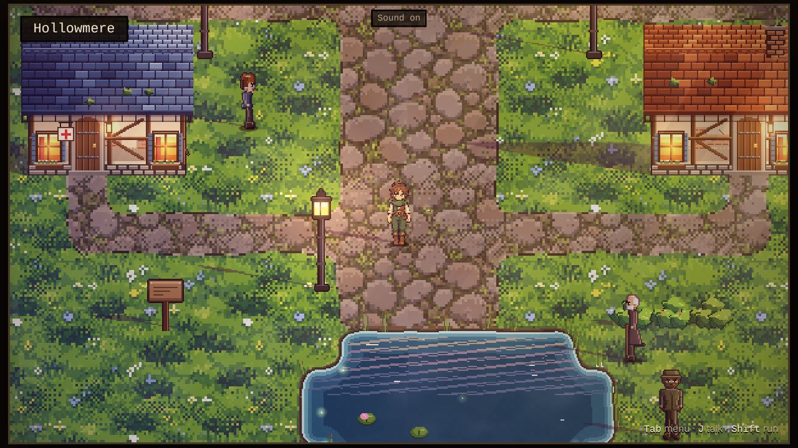

Overclash
A monster-catching RPG with real-time arena combat, playable in the browser. Fully vibecoded: I design, direct and test, AI writes the code and makes the art.
Real gameplay, no editing: Zenyth vs Kazuchi, both controlled by the AI.
What it is about
Overclash is a top-down monster catcher in the spirit of the old GBA games, but with battles that happen in real time: you move around an arena, build combos and dodge attacks. The whole game, including a town to walk around in, runs as a single HTML file in the browser, with no game engine underneath.
What makes it special is how it is made. I don't type the code myself. I work as game designer and art director: I describe what needs to be built, judge every version on screenshots and how it plays, and steer. Claude Code writes and tests the code, ChatGPT draws the art. Vibecoding, but with fixed ground rules I set from the start:
- It stays one file that runs smoothly on a low-end laptop.
- Saves and user-made maps keep working, version after version.
- No silent changes to the balance of existing moves: ask first.
- Nothing is done until it is built, tested and checked on screenshots.
The result is more than a game: five tools that feed each other. Below, one by one.
Real-time combat
Every monster has light and heavy attacks you chain into combo routes (JJJJJ, JKJKJ, JJJKK…), four special moves, an ultimate and its own typing. The arena reacts: craters, cracks and debris stay where an attack landed. AI opponents use the same moveset as the player.
Destruction engine and Destruction Lab
A hit should leave a mark. The destruction engine draws craters, cracks, pillars breaking out of the ground, residue and its own pixel particle system, all in the same gritty pixel style. To tune it without touching code every time, I had an editor built for it: the Destruction Lab.
In the Lab you stamp effects into the arena and tune them with sliders. In Moves mode you play a move frame by frame on a timeline, click a projectile and change its colour, glow, trail or impact. Edit something on another frame and a keyframe is set automatically, like in an animation program.

The overworld
Hollowmere, the starting town, runs on a custom tile renderer with light from lamps and windows, wind moving through grass and trees, chimney smoke and people walking around. Paths and shores blend smoothly instead of in hard blocks.
Hollowmere with art drawn in code.
Map maker
So that I (and a teammate) can make new areas without code, the game has a full map maker. You paint terrain with a brush, rectangle or fill, place trees, buildings and NPCs, build height with cliffs, stairs and ledges, make cutscenes and stitch maps together on a world map. One click and you are playing your map.
From ChatGPT image to game asset
I am not a pixel artist. ChatGPT can make pixel art, but it arrives messy: blurry edges, 'fake pixels' that don't sit on a grid, a magenta background bleeding through, and every image with its own colours. Putting it straight into the game gave glitchy, cluttered sprites.
So the map maker has an art importer. Drop in an image and it finds the real pixel size, removes the background and magenta fringe, snaps everything to a shared palette and makes terrain seamless. A sheet with several assets is cut up automatically. Terrain is painted into the existing shapes, so paths, shores and cliffs keep joining up cleanly. A character becomes an NPC walking in four directions. Light, shadow and height are then done by the engine, so separate ChatGPT images look like one world.



Walking around in the new art, with the ChatGPT character as the player.
How it is built
- One file. A build script joins 77 JavaScript files into a single HTML file, with no framework or game engine.
- Test before shipping. 34 automated browser tests (Playwright) play the game: battles, the map maker, the importer. One fixed test checks that a battle plays out exactly the same after a change, so balance never shifts unnoticed.
- Live online. Every change goes through GitHub, and a GitHub Action builds and publishes the game to GitHub Pages automatically.
- Design documents. The big systems have a design document, so decisions can be traced and a new session can pick up where the last one stopped.